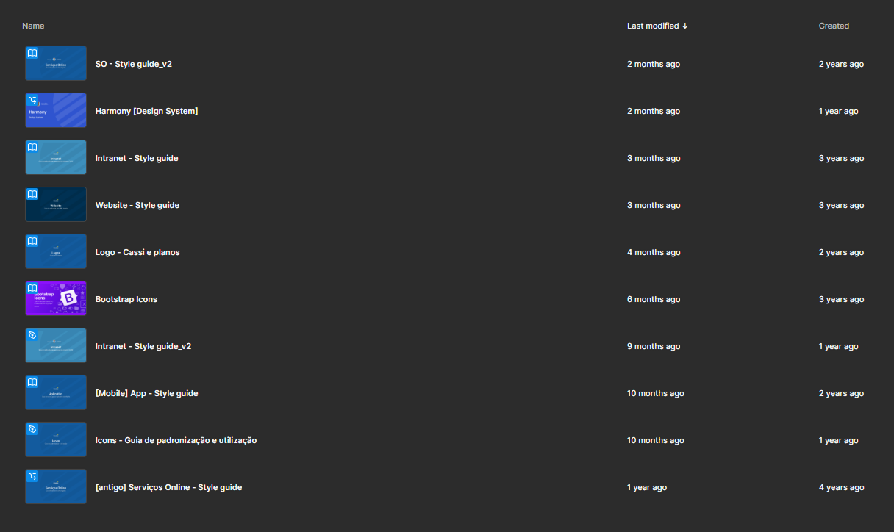
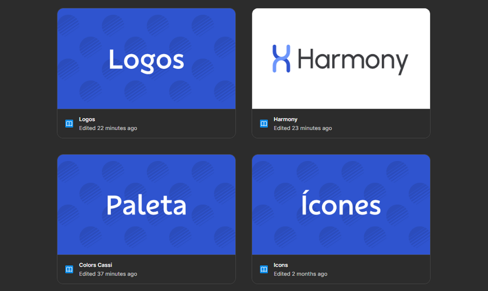

Harmony
Five platforms, four years of diverging decisions. We built the system that made good design durable.

Good decisions couldn't compound.
CASSI's digital ecosystem spans five platforms maintained by separate Figma libraries with different update cycles, inconsistent token structures, and no shared governance. Every pattern solved in one platform had to be re-litigated in the next. Four years of design work existed in five places simultaneously — and effectively in none of them.
End to end — from politics to production.
I led Harmony from initial articulation through production launch — including three years of organizational groundwork before a single component was built. Once approved, I defined the governance model, led the hands-on build of components, tokens, and variables, and oversaw adoption across all five platforms.
Three decisions that shaped everything.
Unification over federation
A federated model gives teams autonomy but creates coordination overhead. For CASSI's team size and cross-platform consistency requirements, one library with well-governed exceptions was the right call — even if it meant harder conversations upfront.
React + Next.js as an organizational decision
Choosing the technology stack wasn't just a technical decision — it was a talent strategy. A dominant market stack widens the available talent pool and reduces onboarding friction for an 80-year-old institution carrying legacy debt.
Accessibility and content as structural requirements
Both ContentOps standards and accessibility criteria were built into components at the token level — not documented separately. An error state ships with correct contrast, correct ARIA attributes, and a content pattern. Because those aren't three decisions. They're one component.
One library. Five platforms. Zero inconsistencies.

Older
NewerShipped in 3 months. Halved delivery time.
50%
reduction in delivery cycle time
5
platforms unified under one library
16w → 8w
second product built in half the time
Jan 2026
Storybook library launched
Have a project in mind?